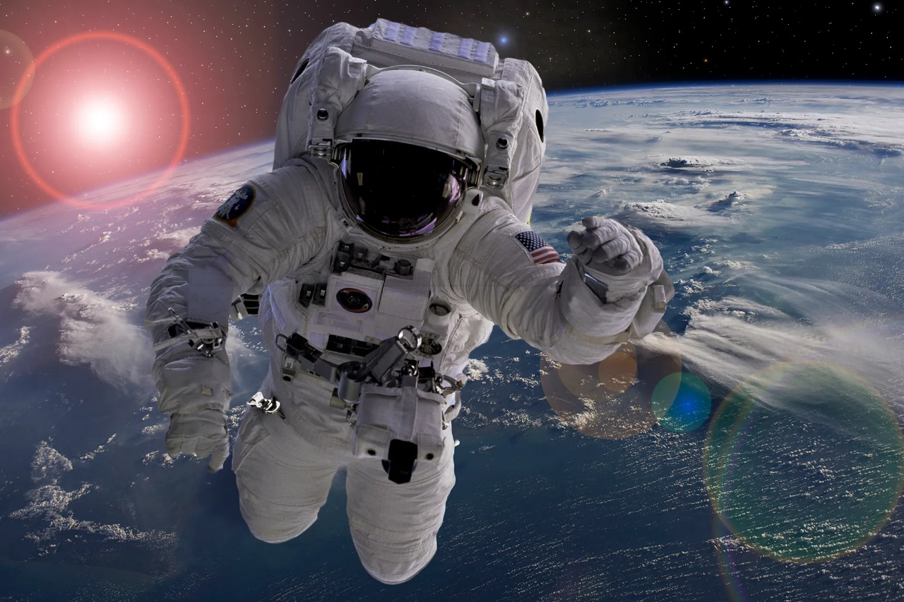

ASTRONAUT
WHAT IS A ASTRONAUT?
Astronaut is a person trained, equipped, and deployed by a human spaceflight program to serve as a commander or crew member aboard a spacecraft.
TYPES OF ASTRONAUT
1. The pilot
Pilots are responsible for commanding the spacecraft and the operations at the space station operations. Their primary responsibilities are taking care of the health of the crew and maintaining the spaceship's mechanics.
2. The mission specialist
A mission specialist usually has qualifications in practical disciplines such as engineering, medicine or science. They use the practical skills learned in their education in space travel.
3. The payload specialist
The third type of astronaut is a payload specialist which is one of the most uncommon kinds of astronauts. A payload specialist participates in a space mission because of the need for their specialised skills or knowledge of a specific payload, operation or task
How to become astronaut?
1. Complete schooling (10th).
After 10th complete 12th grade with science stream.
2. Undergraduate Preparation: Admissions to UG programmes to become an astronaut are done on marks obtained in the 12th class or entrance exams such as JEE Main, JEE Advanced depending upon the type of course one wishes to pursue.
3. Postgraduate Preparation: While admissions to PG courses are done on the basis of entrance exam conducted by the university or national level such as GATE, IIT JAM etc. After completing PG courses students can opt for further studies and can pursue PhD. Admissions to doctorate degree courses are usually done on combined marks of the previous examination and entrance exam conducted by the universities or at the national level followed by personal interview.
4. To become an astronaut in ISRO, one has to be an Indian citizen. Presently, ISRO chooses pilots from the Indian Air Force for its space missions. However, when ISRO opens its astronaut program to common people, a bachelor’s degree from a recognized university either in engineering, physics, mathematics, computer science, chemistry or biology would be the basic requirement. A higher degree (master's degree or PhD) from a recognized university in aerospace engineering or aeronautical engineering will be an added advantage to the candidate.
5. To become astronaut in nasa To be an astronaut in NASA, the candidate must be a U.S. citizen. The candidate must possess a master's degree in a STEM field, including engineering, biological science, physical science, computer science or mathematics, from an accredited institution. He/she must also have at least two years of related professional experience obtained after degree completion or at least 1,000 hours pilot-in-command time on jet aircraft.
6. To become astronaut in spaceX To be an astronaut inSpaceX, the candidate must be a U.S. citizen. The candidate must possess a master's degree in a STEM field, including engineering, biological science, physical science, computer science or mathematics, from an accredited institution. He/she must also have at least three years of related professional experience obtained after degree completion or at least 1,000 hours pilot-in-command time on jet aircraft.